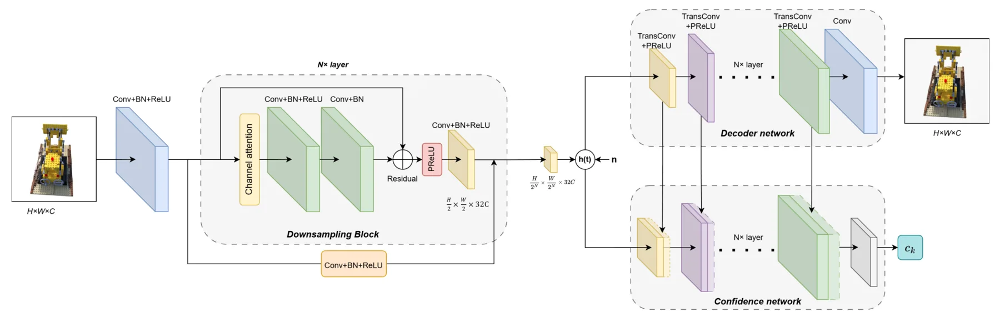

面向实时移动三维重建的语义通信Toward Semantic Communication for Real-time Mobile 3D Reconstruction
把无线链路不确定性一直传递到几何估计，直接涉及位姿初始化和 BA；目前摘要只报告仿真结论，缺少实机链路、延迟预算和定量数值。
一句话工作总结
让通信端输出像素置信度，并把该可靠性显式注入 RANSAC 和 BA，增强弱链路下在线重建。
摘要
移动平台把连续图像传到服务器进行在线位姿和场景估计时，通信失真会破坏多视一致性。本文设计语义收发器，同时输出重建图像与像素级置信图，并将置信度用于 RANSAC 位姿初始化和 bundle adjustment，以降低不可靠区域的影响。仿真结果表明，相比现有语义通信以及传统信源—信道分离编码，该框架在保持图像质量的同时改善了位姿精度和三维结构一致性。
Real-time mobile 3D reconstruction is fundamental to many emerging applications such as autonomous navigation and digital twin construction, where a moving platform continuously captures an image stream and transmit to a computing server for scene understanding. Unlike offline reconstruction, camera poses and scene geometry are estimated on-the-fly during acquisition, making multi-view consistency a real-time requirement and rendering geometric estimation highly sensitive to communication-induced distortions. Semantic communication (SemCom) transmits compact semantic information, offering a promising way to preserve task-critical data over unreliable links. However, existing designs are optimized at the image or single-view level and without providing explicit reliability information for geometric estimation, limiting their applicability to real-time mobile 3D reconstruction. In this context, we propose a SemCom framework for real-time mobile 3D reconstruction. The framework includes a semantic transceiver that outputs a reconstructed image alongside a pixel-wise confidence map, quantifying the reliability of each region. We further introduce a confidence-guided geometric estimation method, incorporating confidence into RANSAC-based pose initialization and bundle adjustment to reduce the influence of unreliable regions and enhance robustness under noisy channels. Simulations show that, compared to existing SemCom and traditional seperate source and channel coding, our framework maintains high image quality while significantly improving pose estimation accuracy and 3D structural consistency.
中文解读摘录
- 链接：arXiv 2607.16128
- 核心贡献：语义收发器除重建图像外还输出像素置信图，并把置信度注入 RANSAC 位姿初始化和 BA，抑制通信失真区域。
- 为什么重要：把通信链路的不确定性显式传递到几何估计，而不是只优化单帧视觉质量。
- 待核查：目前只见仿真结论；需要真实无线链路、端到端延迟、带宽—位姿精度曲线和置信度校准实验。
图表/页面预览

{kind=link}
